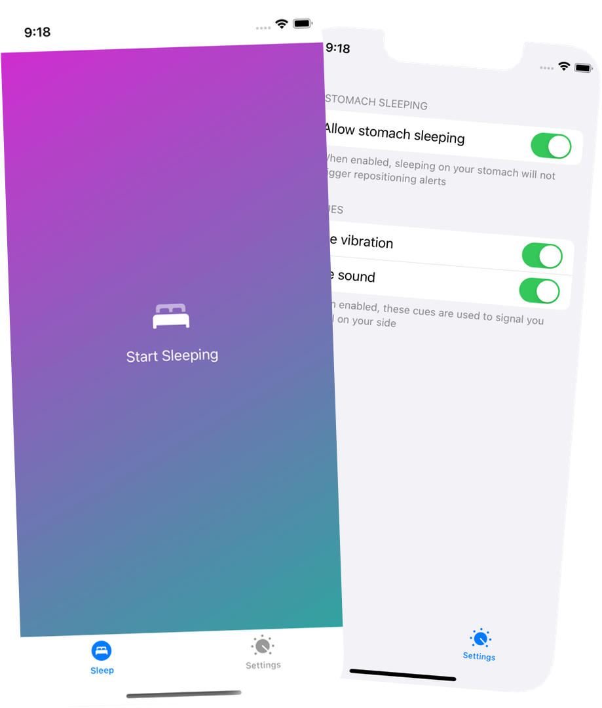

Snurk will help you stop snoring
Snurk detects when you lie on your back and prompts you to roll on your side


Snurk detects when you lie on your back and prompts you to roll on your side
Snurk is Dutch for snoring. I am a developer and a snoring expert (ask
my wife).
So I built an app that detects when you lie on your back and prompts
you to roll on your side
Anti-snoring bands from medical companies are
quite expensive.
Snurk costs you a cup of coffee (€2,29)
Simply lie on your back, start the app, press the Start button, and put the phone in your pyama's front pocket